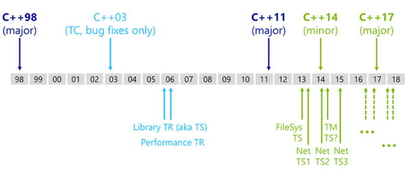
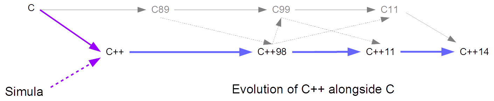
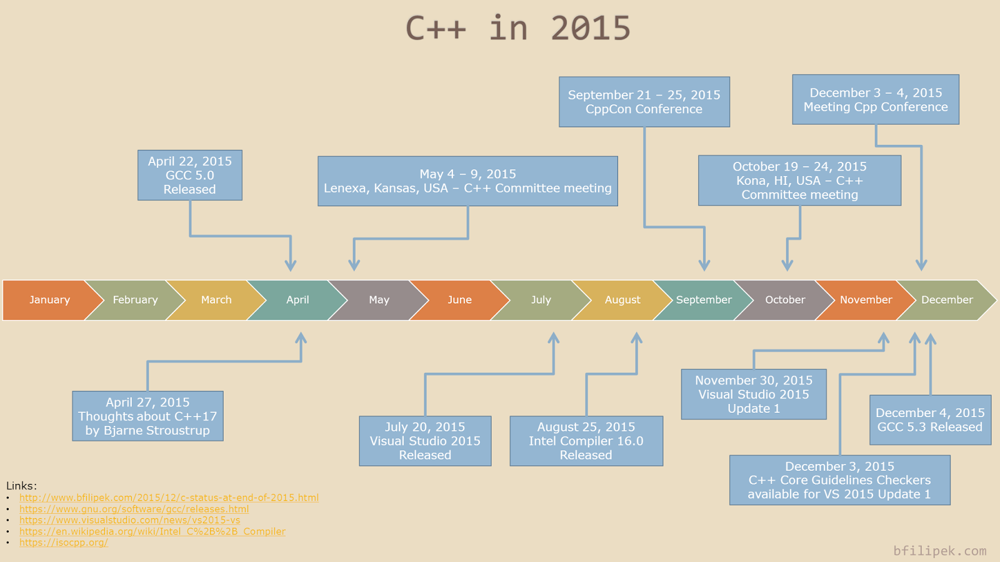

Notes on C++14
- What is a standard?
- TS: "A normative document representing the technical consensus within an ISO committee". TS is a preview of a standard. ISO requires that every TS either becomes standard or is withdrawn in 6 years.
- TR: "An informative document containing information of a different kind from that normally published in a normative document."
- C++ Standards Timeline [source: WWW]

- Evolution of C++ [source: WWW]

- C++ as in 2015 [source: WWW]

1 C++14 v C++11 Features
- Generic lambdas:
auto lambda = [](auto x, auto y) {return x + y;}; - Constant Expressions: A
constexpris computed at compile time. - Type Deduction of Return Value:
auto DeducedReturnTypeFunction(); - https://gcc.gnu.org/projects/cxx-status.html#cxx14 g++ support
2 Exercise
- As a learning experience, fix this worms example code so that it is C++14 compliant.
3 References
- http://www.stroustrup.com/ Home page of the creator of C++. Has many links. Highly recommended visits.
- https://www.quora.com/Why-do-people-say-that-C++-has-a-lot-of-obscure-features ?
- http://www.drdobbs.com/cpp/the-c14-standard-what-you-need-to-know/240169034
- SEI CERT Coding Standards, 2015: C https://www.securecoding.cert.org/confluence/display/c/SEI+CERT+C+Coding+Standard; C++ https://www.securecoding.cert.org/confluence/pages/viewpage.action?pageId=637
- C++14 Standard.
- The link http://open-std.org/jtc1/sc22/wg21/docs/papers/2013/n3797.pdf is to a cost-free download of a draft dated 2013.
- The official 2014 pdf is paywalled
- The working draft of the next version Pages = 1370+ http://open-std.org/JTC1/SC22/WG21/docs/papers/2015/n4567.pdf